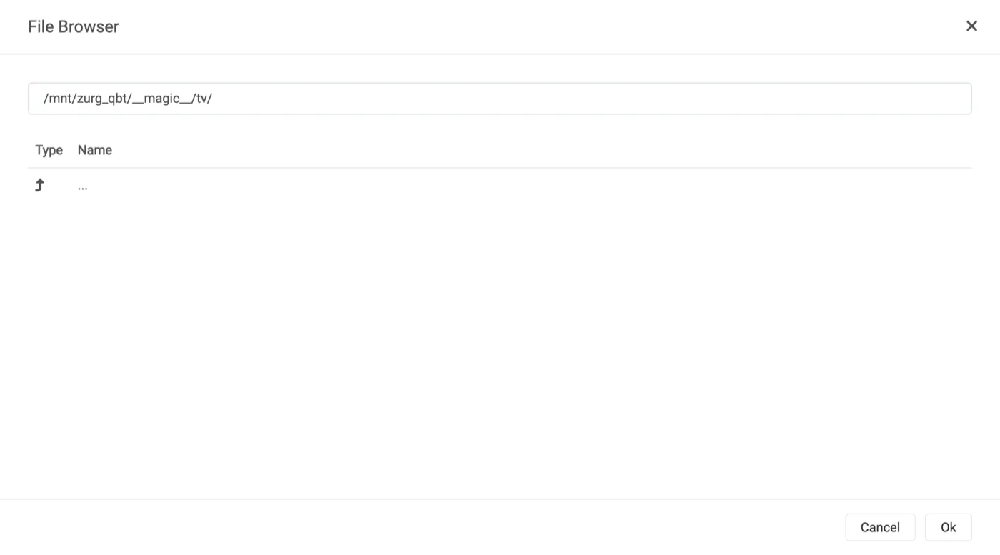
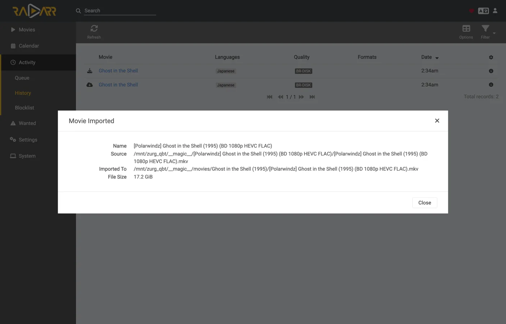
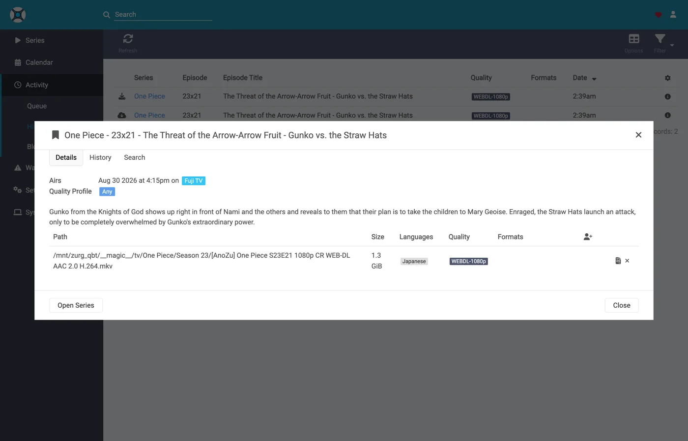
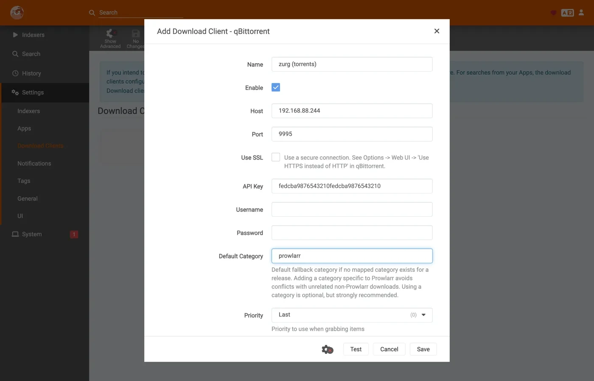

Sonarr и Radarr с торрентами, пошагово
Есть три способа использовать Sonarr и Radarr с zurg. Главный выбор: кто ищет, zurg или *arrs. Какой выбрать, там они сравниваются.
Первые два могут работать одновременно. Они используют одну и ту же папку __magic__.
Предыдущая инструкция настраивала *arrs на zurg для Usenet, где zurg отвечал как SABnzbd. Это вторая половина: zurg отвечает как qBittorrent, *arrs отдают ему magnet или .torrent вместо NZB, а релиз уходит на аккаунт debrid, а не на новостной сервер. Импорт тот же трюк: переименование внутри __magic__, ничего не скачивается для импорта, ничего не копируется.
Что именно отправляет *arr, имеет значение. .torrent обычно загружается в аккаунт как сам файл, а magnet добавляется только по info hash. В режиме только кэша (по умолчанию) TorBox и Debrid-Link получают info hash, потому что так они отказывают в релизе, которого нет в кэше, не добавляя его. Magnet заставляет аккаунт самому определить, что лежит в торренте, по хешу. У хеша приватного трекера нет публичного роя, по которому это можно выяснить. Real-Debrid падает с magnet_error без файлов, а TorBox принимает такой magnet и застревает в checking без списка файлов, без размера и с оценкой в сто дней, так что загрузка ни падает, ни завершается. Файл .torrent передает хеш напрямую в поиск по кэшу аккаунта, поэтому контент, который уже есть в аккаунте, добавляется сразу, без всякого разрешения magnet. Именно поэтому приватные индексаторы здесь работают: их релизы добавляются ровно тогда, когда контент уже есть в аккаунте, а для всего, чем делится сообщество, это обычный случай. Указывайте *arr на индексатор, который отдает файлы .torrent, а не magnet. Приватные как раз так и делают.
Всё, что ниже, снято с zurg 2026.08.30.0459-nightly-73-g5b4c9790, Sonarr 4.0.19.2979, Radarr 6.3.0.10514 и Prowlarr 2.5.2.5491, на рабочей установке с настоящим аккаунтом AllDebrid. Имена хоста и пользователя заменены на you@zurg-server. Имена индексаторов: my-indexer. API-ключи и количество элементов в библиотеке условные. Больше в захваченном выводе ничего не менялось.
Перед началом
Нужно, чтобы выполнялись три условия. Проверь все три прямо сейчас: каждое из них потом ломается так, что похоже на совсем другую проблему.
- У zurg есть аккаунт, который умеет добавлять торренты — Real-Debrid, AllDebrid, TorBox, Premiumize, Debrid-Link или Offcloud. Все шесть принимают сам загруженный файл
.torrent, и именно поэтому релиз с приватного трекера можно добавить. Аккаунт Usenet не принимает торрент ни в одном из видов: установка, где единственный провайдер —nzb, принимает каждый граб, а потом его отклоняет. zurg сообщает об этом при запуске. magic.enabledстоит вtrue. Без этого путь для сохранения не создаётся, и каждый импорт завершается ошибкой. См.__magic__.- Монтирование видно *arr по тому пути, который сообщает zurg. Если *arr работает в контейнере, прочитай
шаг 8 до того, как что-либо настраивать. Если он установлен как обычное приложение на той же машине, он видит монтирование там, куда его монтирует zurg, но на каждой системе есть своя особенность:- Linux: *arr, запущенный от другого пользователя, чем zurg, видит пустую папку, пока не включён
user_allow_other. См. настройку Linux. - macOS: запускай его от того же пользователя, что и zurg. Монтирование находится в
/Volumes/Zurg, если ты не менялmount_path. - Windows: запускай Sonarr и Radarr как приложение в трее, которое предлагает их установщик, а не как службу Windows. Диск
Z:zurg принадлежит сессии, в которую ты вошёл, а служба работает вне её, поэтому диска она не видит. См. правила сессий.
- Linux: *arr, запущенный от другого пользователя, чем zurg, видит пустую папку, пока не включён
Первые два проверь прямо в файле конфигурации, в рабочей папке zurg. На Windows открой config.yml в Блокноте.
$ grep -A3 '^providers:' config.yml
providers:
- type: alldebrid
token: <redacted>
$ grep -A3 '^magic:' config.yml
magic:
enabled: true
allow_delete: falseПорядок в списке providers: важен. Граб предлагается каждому аккаунту, который принимает торренты, в этом порядке. Если аккаунт отказывается или зависает на нём, от него отказываются и пробуют следующий. Если у тебя два аккаунта, ставь первым тот, который тебе важнее тратить.
Два ключа выводят аккаунт из этого порядка. watchlist: true ставит один аккаунт первым, где бы он ни стоял в файле; add_torrents: false вообще исключает его из очереди, так что он продолжает отдавать и читать свою библиотеку, но на него ничего нового не добавляется — например, архивный аккаунт или аккаунт, у которого квота уже занята. Аккаунт Usenet в любом случае торренты не получает. Оба ключа описаны в справочнике по конфигурации.
1. Включите эндпоинт
Два способа, результат один и тот же. Оба записывают изменения в config.yml, и оба требуют перезапуска: маршруты, которые обслуживают __magic__, и эндпоинт qBittorrent регистрируются один раз, при запуске zurg.
Вариант A — панель управления
Открой дашборд zurg, нажми Config и прокрути до __magic__ & Download Clients. Включи Serve __magic__ и qBittorrent Endpoint.

Config — это место, где живёт настройка; Magic — это место, где ты позже будешь смотреть, как приходят граббы.

Оставь qBittorrent Save Path пустым, если твой *arr монтирует zurg в другое место, чем сам zurg — см.
Вариант B — config.yml
Добавь блок вручную и перезапусти zurg.
magic:
enabled: true
qbittorrent:
enabled: true
api_key: "" # empty = zurg generates one and keeps it
categories: [tv-sonarr, radarr]
save_path: "" # empty = <mount_path>/__magic__/__all__
cached_only: true # the default: only take what an account already holdsКатегории — это не папки. Все они ведут в одно и то же место: в папку самого релиза внутри __magic__/__all__. Список только заранее создаёт категории: Test в клиенте создаст любую недостающую категорию, а zurg хранит её в data/qbittorrent-categories.json. Prowlarr, если ты им пользуешься, ожидает prowlarr. См.
Перезапусти zurg, а затем убедись, что эндпоинт зарегистрировался и провайдер подхватился:

Эндпоинту нужна всего одна строка alldebrid. Подойдёт любой из шести типов, которые умеют работать с торрентами.
Лог запуска говорит то же самое, так что стоит прочитать его хотя бы раз:
INFO router.qbittorrent qBittorrent API on /api/v2 and /qbittorrent/api/v2, save path /mnt/zurg_qbt/__magic__/__all__, categories tv-sonarr, radarr
INFO router.qbittorrent qBittorrent: cached-only, so a grab is only accepted onto an account that already holds the content; anything else is refused and the *arr takes its next release. Set qbittorrent.cached_only: false to let accounts download
INFO router.qbittorrent qBittorrent: torrents are offered to alldebrid, in that order2. Найдите API-ключ
Ключ API — это единственная защита этой конечной точки, так что настройте его правильно один раз и никуда публично не вставляйте.
Если вы оставили api_key пустым, zurg сгенерировал ключ при первом запуске и записал его в data/qbittorrent-apikey:
$ cat data/qbittorrent-apikey
fedcba9876543210fedcba9876543210
Пример ключа — у вас будет свой. Файл сохраняется после перезапусков, поэтому ключ остаётся постоянным после генерации.
Если вы задали api_key сами, он находится в config.yml, и файл никакой не создаётся.
Эта конечная точка находится вне базовой аутентификации zurg. Программы *arr проходят аутентификацию в клиенте загрузки собственным способом, а их HTTP-слой превращает ошибку 401 из базовой аутентификации в «unable to connect» без какой-либо полезной информации, поэтому zurg намеренно исключает /api/v2. Ключ API — это единственная преграда. Относитесь к порту так же, как ко всему остальному в zurg: используйте его только в доверенной сети или за чем-то, что её защищает.
Есть три способа передать ключ, и все они поддерживаются:
Authorization: Bearer <key>— то, что отправляет клиент, когда заполнено поле API Key. Это рекомендуемый вариант: он пропускает вход целиком.- Ключ как пароль в
auth/loginс любым именем пользователя. Используйте его, если хотите заполнять поля Username и Password. - Собственные имя пользователя и пароль панели zurg, если в
config.ymlзаданыusername:иpassword:.
3. Проверьте, что он отвечает
Сделайте это до того, как трогать Sonarr. Десять секунд, и вы сразу поймёте, в чём проблема: в zurg или в *arr. Это избавит от путаницы на всю дальнейшую настройку.
$ KEY=fedcba9876543210fedcba9876543210
$ ZURG=192.168.88.244:9995
$ curl -s "http://$ZURG/api/v2/app/webapiVersion"
Forbidden
$ curl -s -H "Authorization: Bearer $KEY" "http://$ZURG/api/v2/app/webapiVersion"
2.11.2
$ curl -s -H "Authorization: Bearer $KEY" "http://$ZURG/api/v2/app/version"
v5.0.4
$ curl -s -H "Authorization: Bearer $KEY" "http://$ZURG/api/v2/app/preferences" | jq .save_path
"/mnt/zurg_qbt/__magic__/__all__"В PowerShell. Введите curl.exe, а не curl: curl в Windows PowerShell — это другая команда.
PS> $KEY = "fedcba9876543210fedcba9876543210"
PS> $ZURG = "192.168.88.244:9995"
PS> curl.exe -s "http://$ZURG/api/v2/app/webapiVersion"
Forbidden
PS> curl.exe -s -H "Authorization: Bearer $KEY" "http://$ZURG/api/v2/app/webapiVersion"
2.11.2
PS> curl.exe -s -H "Authorization: Bearer $KEY" "http://$ZURG/api/v2/app/version"
v5.0.4
PS> (Invoke-RestMethod "http://$ZURG/api/v2/app/preferences" -Headers @{ Authorization = "Bearer $KEY" }).save_path
Z:/__magic__/__all__Голый Forbidden — это нормальный ответ. Клиенты сначала делают пробный запрос без авторизации, GET /api/v2/app/webapiVersion, и настоящий qBittorrent отвечает на него 403, если API на месте, но никто не залогинен. Именно это отвечает и zurg, а клиент понимает это так: «v2 поддерживается, теперь нужно авторизоваться». Обычный ответ 404 означает, что qbittorrent.enabled всё ещё false или zurg не перезапускали после изменения этой настройки.
Затем проверьте, что неверный ключ действительно отклоняется:
$ curl -s -o /dev/null -w "%{http_code}\n" -H "Authorization: Bearer wrongkey" \
"http://$ZURG/api/v2/torrents/info"
403PS> curl.exe -s -o NUL -w "%{http_code}\n" -H "Authorization: Bearer wrongkey" "http://$ZURG/api/v2/torrents/info"
403save_path — это путь, который zurg будет передавать клиентам. Проверьте сейчас, что по этому пути они могут открыть файлы.
Работают оба варианта URL, так что в поле URL Base клиента подойдёт любой:
(Предыдущий перевод был отклонён: заголовки отличаются. Сохраняйте структуру в точности.)
4. Создайте корневые папки
Создайте их, прежде чем добавлять, потому что диалог Add Root Folder в *arr просматривает живую файловую систему и не предложит папку, которой не существует.
$ mkdir -p /mnt/zurg_qbt/__magic__/tv /mnt/zurg_qbt/__magic__/movies
$ ls -d /mnt/zurg_qbt/__magic__/tv /mnt/zurg_qbt/__magic__/movies
/mnt/zurg_qbt/__magic__/movies
/mnt/zurg_qbt/__magic__/tvPS> New-Item -ItemType Directory -Force Z:\__magic__\tv, Z:\__magic__\moviesИли создайте обе папки в Проводнике.
Подставьте свой mount_path вместо /mnt/zurg_qbt. Если он не задан, по умолчанию это /mnt/zurg в Linux, /Volumes/Zurg в macOS и Z: в Windows.
Корневая папка должна лежать рядом с путём сохранения, а не на нём и не выше него. Это то же правило, что и в руководстве по Usenet, и по той же причине: zurg сообщает __magic__/__all__ как путь сохранения. Оба клиента выдают проверку состояния, если корневая папка совпадает с папкой вывода клиента загрузок. Radarr тоже выдаёт её, если корневая папка содержит эту папку, а соседние папки не вызывают ни того, ни другого. Это руководство содержит скриншоты того, как делать не надо.
Есть и вторая причина, специфичная для торрентов: перемещение, у которого папка назначения находится вне __magic__, — это перемещение между двумя файловыми системами, а значит, копирование. А копирование с debrid-монтирования читает весь релиз обратно по сети. Remove Completed, оставленный включённым (
Перемещение между двумя томами тоже является копированием. Это важно в Docker. Шаг 8 описывает, как с этим быть.
5. Добавьте клиент в Sonarr
Новый Sonarr блокирует всё за экраном первого запуска. Выберите Forms (Login Page), задайте имя пользователя и пароль и нажмите Save.

Дальше не пустит, пока Authentication Method не будет установлен в значение, отличное от None.

После Save вас один раз выкинет из системы, и вы окажетесь на странице входа.

Settings → Download Clients
Перейдите в Settings → Download Clients. На чистой установке здесь есть только карточка +.

Нажмите + под "Download Clients", а не тот, что ниже, под "Remote Path Mappings".
Выберите qBittorrent в колонке Torrents.

zurg притворяется именно qBittorrent, поэтому ничего другого из этого списка не сработает. По двум колонкам легко понять, какой гайд вы читаете: SABnzbd находится в разделе Usenet, а qBittorrent в разделе Torrents.
Диалог открывается со стандартными настройками qBittorrent: localhost, порт 8080, без ключа.

Что вписать в каждое поле

Показанный API-ключ приведён для примера — вставьте свой.
В Docker и «localhost», и имя хоста вводят в заблуждение. Внутри контейнера localhost — это сам контейнер, а собственное имя машины обычно резолвится в 127.0.1.1 — то есть тоже в контейнер. Хост в этой системе называется zurg-server: внутри контейнера Sonarr имя zurg-server резолвилось в 127.0.1.1, хотя с оболочки хоста то же самое имя работало. Используйте LAN- или Tailscale-IP хоста, никогда не localhost и не голое имя хоста.
Нажмите Test. Зелёная галочка означает, что проверки клиента прошли — версия API, аутентификация, категория и список торрентов.

Теперь нажмите Save.

6. Добавьте корневую папку в Sonarr
Перейди в Settings → Media Management и прокрути вниз.

Нажми Add Root Folder. Откроется браузер файлов по файловой системе Sonarr. В Docker это файловая система контейнера.

Введи путь вручную или перейди по папкам. Если маунт действительно виден Sonarr, откроется __magic__, и там будет то, что ты создал на шаге 4, рядом с __all__, который zurg создаёт сам. Это самое быстрое подтверждение, что bind mount настроен правильно.

Если папка пустая или выдаёт ошибку, остановись и сначала исправь маунт, иначе дальше ничего не заработает.

Допиши путь до __magic__/tv (Z:\__magic__\tv на Windows) и нажми Ok.

Если в Free Space написано 1 PiB, это zurg показывает виртуальную файловую систему, а не реальный диск. Так и должно быть. Именно это проходит проверку свободного места у *arr перед отправкой на загрузку.
7. Сделайте то же самое в Radarr
Так же, но с двумя изменёнными значениями: категория — radarr, а корневая папка — __magic__/movies.

Первый запуск Radarr проходит так же: задайте Forms auth, затем войдите.

Settings → Download Clients → +, затем qBittorrent в разделе Torrents.

Тот же хост, тот же порт, тот же ключ. Отличается только Category — radarr, а не tv-sonarr.
Test, зелёная галочка, Save.

Затем Settings → Media Management → Root Folders → Add Root Folder и добавьте /mnt/zurg_qbt/__magic__/movies.
Один zurg, два клиента, одна очередь. Список торрентов, который видит каждый клиент, фильтруется только по категории и ни по чему больше. Если два Sonarr используют tv-sonarr, они будут видеть чужие загрузки; Sonarr на tv-sonarr и Radarr на radarr — нет. Держите по одному клиенту на категорию, и эта проблема не возникнет.
8. Если ваш *arr работает в Docker
Этот шаг для Docker на Linux-хосте. На macOS и Windows установите *arrs как обычные приложения, как описано в
Проблемы те же, что и в руководстве по Usenet, и решения тоже те же: маунт остаётся маунтом, поэтому здесь короткая версия. Подробности есть в шаге 8 того руководства.
Путь, который сообщает zurg, должен быть путём, который клиент может открыть. Если контейнер монтирует библиотеку в другом месте, чем zurg, каждый импорт завершится ошибкой download doesn't contain intermediate path или проверкой remote-path. Задайте qbittorrent.save_path равным пути, который видит клиент, или добавьте remote path mapping:
qbittorrent:
save_path: "/data/zurg/__magic__/__all__" # what the *arr sees, not what zurg seesОдин volume для save path и корневых папок. Не давайте контейнеру два volume, __magic__/__all__ и __magic__/tv. Переименование между ними внутри контейнера не работает. Клиент тогда копирует каждый импорт из вашего аккаунта и пишет его на диск zurg без предупреждения. Дайте один volume, который содержит весь маунт zurg, и открывайте обе папки через него. Bind-монтирование ниже как раз и есть такой volume.
Монтируйте родителя маунта, а не сам mountpoint. При перезапуске zurg размонтирует и снова монтирует его. Контейнер, который смонтировал сам mountpoint, сохраняет мёртвое fuse-соединение, и каждое чтение после этого отвечает Socket not connected. Поскольку оба клиента проверяют свободное место перед захватом релиза, каждый релиз молча отклоняется. Если смонтировать родителя с rslave, новое монтирование придёт как событие подмонтирования, которое контейнер отследит. Контейнеры этого стенда были запущены до того, как zurg смонтировался, и маунт всё равно появился внутри них:
$ docker exec sonarr df -h /mnt/zurg_qbt
Filesystem Size Used Avail Use% Mounted on
zurg{8amax}: 1.0P 0 1.0P 0% /mnt/zurg_qbt9. Проследите один grab от начала до конца
Добавьте один тайтл, загрузите его вручную и проследите весь путь до конца. Всё, что ниже, — это реальная загрузка через настройку выше: Ghost in the Shell (1995), загруженная вручную с индексатора.
Grab it
Откройте фильм, нажмите Interactive Search и выберите релиз.

В колонке Source написано torrent — это протокол, который принимает этот эндпоинт. Нажмите кнопку со стрелкой в круге в конце строки, чтобы отправить релиз. Если клиент сначала просит подтвердить сопоставление:

Override and Grab появляется, когда релиз не совпадает чисто. Проверьте сопоставление и нажмите Grab Release. При обычной отправке это окно не появляется.
Аккаунт забирает файл
Три строки в логе zurg — это весь процесс добавления: аккаунт, который его принимает, задание, которое заводится, и finished. Снимок ниже сделан в более старой сборке, которая писала только последние две:
INFO router.qbittorrent qBittorrent: [Polarwindz] Ghost in the Shell (1995) (BD 1080p HEVC FLAC) (0c5e4077…) added to alldebrid as 720824192
INFO router.qbittorrent qBittorrent: [Polarwindz] Ghost in the Shell (1995) (BD 1080p HEVC FLAC) (0c5e4077…) finished on alldebridХеш — это инфо-хеш, который отправил клиент. added … as 720824192 — это собственный id аккаунта для этого релиза. Релиз уже был в кэше аккаунта, поэтому finished появляется примерно через секунду. Некэшированный релиз висит между двумя строками, пока аккаунт его скачивает. Что в этот промежуток делает аккаунт, видно в очереди клиента:
Застрявший рой показывает Downloading с нулевой скоростью и нулевым количеством сидов, а не предупреждение о зависании. stalledDL — это состояние, по которому *arrs действуют при обработке неудачных загрузок, а рой без сидов ещё не означает, что релиз мёртв.
Магнет целиком доходит до аккаунта. zurg передаёт отображаемое имя, под которым его взял клиент, и все трекеры, которые он указал. На индексаторе, который публикует только магнеты, отображаемое имя — единственное место, где есть название релиза. Без него TorBox показывает нерешённый захват под его сорокасимвольным хешем, пока метаданные не разрешатся. .torrent сам несёт своё имя и трекеры, поэтому к нему ничего не добавляется. Исключение — режим только для кэша (по умолчанию) на TorBox и Debrid-Link: им передаётся только хеш, потому что попадание из кэша возвращается под своим настоящим именем.
Происходит импорт
Activity → Queue, потом Activity → History. Два события с разницей в секунды: Grabbed, затем Movie Imported:

Раскрой импортированную строку и посмотри пути. Source — это /mnt/zurg_qbt/__magic__/__all__/[Polarwindz] …/[Polarwindz] ….mkv, а Imported To — /mnt/zurg_qbt/__magic__/movies/Ghost in the Shell (1995)/…. Файл никуда не переезжает из __magic__, поэтому импорт здесь — это просто переименование. Скриншот сделан до того, как библиотека переехала вниз, в __all__, так что путь источника у тебя будет на один уровень глубже.
Релиз, который клиент решил не импортировать, остаётся в очереди с предупреждением. Строка в очереди на этом скриншоте — апгрейд, который профиль качества отклонил. Он виден, до кнопки Remove один клик, но сам по себе ничего не очищает:


Status: Downloaded, Size 17.2 GiB — и ничего не качалось, чтобы это стало правдой. Байты считываются с аккаунта, когда что-то проигрывает файл.
Убедитесь, что файл настоящий
Импорт переместил файл в корневую папку. Проверьте один из них с обоих концов и спросите у ffprobe, что это за файл:
Если ваша оболочка не находит ffprobe, используйте ~/zurg/bin/ffprobe: установщик сам кладёт свою копию туда, если ffprobe не был установлен.
$ F="/mnt/zurg_qbt/__magic__/tv/One Piece/Season 23/[AnoZu] One Piece S23E21 1080p CR WEB-DL AAC 2.0 H.264.mkv"
$ ls -la "$F"
-rw-rw-r-- 1 you users 1446325722 Aug 31 00:44 …mkv
$ dd if="$F" bs=1M count=1 >/dev/null
1048576 bytes (1.0 MB, 1.0 MiB) copied, 0.00592934 s, 177 MB/s
$ ffprobe -v error -show_entries format=duration,size,format_name \
-of default=noprint_wrappers=1 "$F"
format_name=matroska,webm
duration=1415.808000
size=1446325722В PowerShell, из папки zurg. Установщик положил bin\ffprobe.exe туда, если ffprobe уже не был в вашем PATH; в этом случае введите просто ffprobe:
PS> $F = Get-Item -LiteralPath "Z:\__magic__\tv\One Piece\Season 23\[AnoZu] One Piece S23E21 1080p CR WEB-DL AAC 2.0 H.264.mkv"
PS> $F.Length
1446325722
PS> bin\ffprobe.exe -v error -show_entries format=duration,size,format_name -of default=noprint_wrappers=1 $F.FullName
format_name=matroska,webm
duration=1415.808000
size=1446325722Это файл, который забрал Sonarr: эпизод, загруженный тем же способом и импортированный в tv/One Piece/Season 23/. Matroska на 23 минуты, читается прямо с аккаунта дебрид-сервиса. Байты приходят, когда что-то их читает, а не когда импортирует *arr.
В Sonarr это выглядит так же


Те же два события в истории, тот же импорт через переименование, и очередь, которая пустеет в тот же момент, как появляется импорт. Кэшированный релиз проходит путь от захвата до импорта за пару секунд, поэтому скриншота прямо во время загрузки здесь нет.
10. Prowlarr, ручные grab
Prowlarr обращается к тому же эндпоинту и использует тот же клиентский код qBittorrent, что и два других, но импортёром он не является. У него нет библиотеки, и он ничего не импортирует. Зато он умеет вручную отправить релиз на аккаунт, ради этого и существует его download client.
Первый запуск Prowlarr показывает тот же экран входа Forms-auth, что и два других.


Settings → Download Clients → +, затем qBittorrent. В выборе Prowlarr все клиенты стоят в одном алфавитном списке, а не в двух колонках, как у *arr. Хост, порт и API-ключ те же. Два поля отличаются от *arr:


Test, зелёная галочка, Save.


Затем нажмите Search, введите нужное и отправьте строку клиенту:

Релиз попадает на аккаунт точно так же, как при захвате из *arr: тот же путь добавления, те же категории, та же папка __magic__. Этот оказался закэширован и стал finished меньше чем за секунду. Но импортом он не занимается. Он лежит в аккаунте и отдаётся из маунта, и в этом весь смысл: push у Prowlarr означает положи это на мой debrid-аккаунт прямо сейчас, а не автоматический конвейер grab-import-clean. Для этого оставьте Sonarr и Radarr указывающими на эндпоинт, а индексерами пусть управляет Prowlarr.
11. Добавление релиза вручную
Дашборд zurg не умеет добавлять релизы кнопкой. Но передать zurg релиз вручную всё равно можно, и он уйдёт в нужный Sonarr или Radarr. Добавляйте его через этот эндпоинт и указывайте категорию нужного приложения. Каждое приложение смотрит только на свою категорию. Если у четырёх приложений по четыре категории, каждое видит только свои добавления.
KEY=your-qbittorrent-api-key
curl -H "Authorization: Bearer $KEY" http://localhost:9999/api/v2/torrents/add \
-F 'urls=magnet:?xt=urn:btih:<hash>&dn=Movie.Title.2012.1080p.WEB-DL' \
-F category=radarr4kВ PowerShell используйте curl.exe, а не curl:
$KEY = "your-qbittorrent-api-key"
curl.exe -H "Authorization: Bearer $KEY" http://localhost:9999/api/v2/torrents/add `
-F 'urls=magnet:?xt=urn:btih:<hash>&dn=Movie.Title.2012.1080p.WEB-DL' `
-F category=radarr4kПодойдёт и файл .torrent. Отправьте его как -F 'torrents=@Movie.Title.2012.1080p.WEB.torrent' вместо urls.
За то, импортирует ли приложение релиз, отвечают четыре вещи.
- Фильм или сериал уже должен быть в этом приложении. Оно импортирует только то, что может сопоставить с чем-то из своей библиотеки.
- Имя должно говорить, что это за релиз. Имя магнет-ссылки берётся из её
dn. Имя файла.torrent— это его имя на диске. zurg игнорирует полеrenameиз qBittorrent. Radarr не смог разобратьSintelи отложил его со статусом Unable to parse download. АSintel.2010.1080p.WEB-DLимпортировался. Добавьте в имя год. - Поправьте имя до того, как приложение впервые увидит релиз. Если Radarr один раз решил, что релиз не распознаётся, он будет держаться этого решения до перезапуска. Повторное добавление с нормальным именем ничего не меняло. После перезапуска релиз импортировался.
- Категория — это просто метка. Категория, которой нет в
qbittorrent.categories, всё равно принимается. Она просто не появится в списке категорий. Релиз можно позже перенести в другое приложение. Приложение, которому принадлежит новая категория, импортирует его при следующей проверке.
curl -H "Authorization: Bearer $KEY" http://localhost:9999/api/v2/torrents/setCategory \
-F hashes=<hash> -F category=radarrВ Windows это curl.exe в одну строку, с $KEY, заданным, как показано выше.
Релиз, который уже есть на вашем аккаунте, обрабатывается так же. Это касается и релиза, который вы отправили туда из DMM. zurg видит, что он уже в библиотеке, и записывает его в категорию, не добавляя второй раз. Релиз, который вы никогда не добавляли через этот эндпоинт, остаётся невидимым для Sonarr и Radarr. zurg показывает им только то, что прошло через него.
Проверено 2026-10-04 на аккаунте AllDebrid с Radarr 6.3. Каждый фильм импортировался переименованием в __magic__/movies, без копирования. Radarr с другой категорией его не видел. Sonarr не тестировался.
12. Plex читает один набор папок
Импорт не убирает релиз из собственных папок zurg. Фильм, который Radarr положил в __magic__/movies, остаётся в movies и в __all__. Поэтому Plex должен читать один набор папок, но не оба сразу.
Если ваши библиотеки Plex уже указывают на movies и shows, ничего не меняйте. Загрузки от *arr появятся там без всяких изменений. Добавляйте папки __magic__ в Plex, только если хотите библиотеку, состоящую исключительно из импортов *arr, и тогда уберите остальные папки. Если в Plex подключено и то, и другое, каждый тайтл будет найден дважды.
И никогда не добавляйте корень __magic__. В нём лежит __magic__/__all__, то есть вся библиотека целиком.
13. Indexers и DMM для спонсоров
Sonarr и Radarr ищут через Prowlarr. Здесь подойдет любой публичный торрент-индексатор, потому что zurg сам добавляет магнет в твой debrid-аккаунт. Некоторые публичные сайты стоят за Cloudflare, и Prowlarr без FlareSolverr их не добавит. Такие сайты пропускай.
Если ты спонсируешь zurg, то DMM тоже становится индексатором. Он ищет по всей библиотеке DMM и ставит в начало то, что уже есть на твоем debrid-аккаунте. Такие загрузки происходят мгновенно.
- Возьми свой DMM API key на gatekeeper: нажми Connect GitHub, а если спонсируешь через Patreon, подключи Patreon после этого. Скопируй DMM API key, который там появится. Это не ключ zurg из
шага 2 , и это тот же ключ, что нужен для Usenet-индексатора DMM. Его настраивают на debridmediamanager.com/newznab. - В Prowlarr открой Indexers → Add Indexer и выбери Generic Torznab.
- Вставь URL для своего аккаунта и ключ. Поле API Path оставь как
/api.
Для TorBox и Premiumize сначала нужно привязать ключ этого сервиса в DMM. Где это сделать, написано на странице DMM. Чтобы не видеть то, чего пока нет на твоем аккаунте, добавь /cached в конец URL.
Prowlarr проверяет индексатор при сохранении. Если ключ отклонен, значит, спонсорство истекло или ключ неверный, и в ошибке будет написано, что именно. Дальше Prowlarr сам передает DMM в Sonarr и Radarr. Один ключ позволяет 20 поисков в минуту на все твои приложения вместе.
14. Ваш watchlist в Plex
Sonarr и Radarr могут следить за твоим списком желаемого в Plex. Всё, что ты добавишь в Plex, будет добавлено и найдено, а загрузка пойдёт через zurg, как и любая другая.
В каждом приложении открой Settings → Import Lists → + → Plex Watchlist и нажми Authenticate with Plex.tv. Установи корневую папку на свою папку __magic__ и включи search on add. Radarr подхватит фильмы из списка, а Sonarr сериалы.
У zurg есть собственный список желаемого, который ищет раздачи через индексаторы, которые ты подключаешь к zurg напрямую. Используй что-то одно. Если включить оба, одна и та же позиция будет загружена дважды.
Чтобы следить за другими списками, например жанровыми, см. Списки в Sonarr и Radarr.
Если импорт копирует, а не перемещает
Всё сказанное выше держится на том, что импорт — это переименование. Это решают две вещи. Первая — то, как контейнер попадает к монтированию; изменить её можете только вы. Путь сохранения и корневые папки на двух разных томах превращают каждый импорт в копирование, что бы ещё ни было настроено.
Клиент перемещает импортированный файл, только если считает, что потом может свободно удалить загрузку. Для этого сразу нужны три условия: включённый Remove Completed, торрент, который завершён и остановлен на паузе, и лимит сидирования, который клиент видит как достигнутый. zurg отдаёт последние два именно так, как нужно: каждый завершённый торрент приходит на паузе, с рейтингом 0 при лимите рейтинга 0. Remove Completed — единственное, что зависит от вас.
Если он выключен, клиент вместо этого копирует файл, а на debrid-монтировании копирование означает, что каждый байт релиза заново читается по сети и записывается на локальный диск. Релиз из шага 9 из переименования, которое ничего не перемещало, превратился бы в загрузку 17 GiB ради импорта файла, который и так уже был на месте.
zurg сам включает его обратно, когда у него есть API-ключ *arr — через источник Radarr или Sonarr (достаточно того, где стоит enabled: false) или через баннер на панели, который об этом просит. Проверка идёт при старте, каждые десять минут и при первом обращении *arr к zurg. Он включает Remove Completed через собственный API *arr. Если клиент не проходит собственный Test, изменить его нельзя, и zurg оставляет предупреждение с причиной.
В *arr ничего не говорит о том, что файл скопировали. Импорт в любом случае показывается как успешный. Перемещение — это одна строка MOVE __magic__ в логе zurg. Копия, сделанная через собственное монтирование zurg, попадает в data/local; zurg находит её там примерно за две минуты, превращает обратно в размещение, удаляет копию и пишет в лог A client copied … с баннером на панели. Копия через ваше собственное монтирование — это PUT с полным объёмом байт релиза, и zurg его отклоняет. Загрузку, которую забрало копирование, вернуть уже нельзя.
Use Hardlinks instead of Copy не заменяет это: клиент обращается к этой настройке, только когда уже решил копировать, поэтому превратить копирование обратно в перемещение она не может.
Таймауты и режим cached-only
По умолчанию zurg принимает загрузку только тогда, когда на аккаунте уже есть нужный контент в кэше. Если это выключить, некэшированная загрузка скачивается на аккаунт, а та, что перестала двигаться, снимается с этого аккаунта и передаётся следующему.
qbittorrent:
cached_only: true
download_timeout_mins: 15Старые конфиги. До появления cached_only режим «только кэш» записывался как download_timeout_mins: 0. Конфиг, в котором есть download_timeout_mins и нет cached_only, сохраняет прежний смысл: 0 означает «только кэш», любое другое значение означает скачивание. Если оба параметра заданы и расходятся, побеждает cached_only, а zurg при запуске выводит предупреждение.
Что считается движением. Движением считается смена стадии или рост прогресса. Оценивается сырая доля, которую сообщает аккаунт, а не целые проценты: один процент от релиза в 100 ГБ — это гигабайт. Релиз, который аккаунт распаковывает, от таймера освобождён: эта стадия держит одно и то же значение, сколько бы она ни длилась.
Пятнадцать минут выбраны не наугад, а замерены. AllDebrid ставит здоровую задачу в свою очередь, где все счётчики равны нулю. В двух прогонах из двух задача простояла 580 и 622 секунды, а потом скачалась за считанные секунды и завершилась. Таймаут в десять минут отбросил бы обе. Замеры и таблица, которая сопоставляет формулировки каждого аккаунта с пятью состояниями, понятными *arrs, описаны в Torrent lifecycle.
Что удаляет таймаут. Удаляется экземпляр на этом аккаунте и только он. Удаление касается лишь экземпляра, который zurg сам добавил для этой загрузки и который не был завершён, и ничего больше. Когда аккаунтов не осталось, загрузка помечается как ошибочная, а причина перечисляет все аккаунты и то, что с каждым из них произошло.
Торрент, который вы удалили вручную на аккаунте, сразу передаёт загрузку следующему аккаунту. Все шесть сервисов явно сообщают, когда торрент пропал.
На всё добавление отводится 75 секунд. *arrs отменяют torrents/add через 100 секунд и показывают истечение времени как ошибку соединения, и изменить это нельзя. Все аккаунты делят один общий дедлайн, поэтому три аккаунта помещаются с запасом, а четвёртый получает то время, которое не потратили первые три.
Режим «только кэш» отказывает прямо внутри добавления, и этот отказ — единственный сигнал, на который реагируют *arrs: они помечают загрузку как неудачную и переходят к следующему релизу в списке. Всё, что происходит после добавления, доходит до них как предупреждение о загрузке в процессе, и они ждут её завершения. Как к каждому аккаунту обращается zurg:
zurg не запрашивает у TorBox checkcached и другие проверки кэша. Они показывают, есть ли контент у сервиса, а не то, окажется ли в итоге у вашего аккаунта годная для использования копия.
Что работает, а что нет
Работает:
- Тест подключения во всех трёх клиентах: версия API, аутентификация, категория и список торрентов.
- Захват релизов, очередь, история, импорт с переименованием и очистка после импорта в Sonarr и Radarr.
- Повторный захват релиза, который аккаунт уже держит. *arr получает готовый торрент обратно и импортирует его, а аккаунт хранит одну копию.
- Несколько аккаунтов: захват предлагается каждому в порядке
providers:, а отказ или зависание переводит его к следующему. - Ручная отправка релиза из Prowlarr.
Не работает:
- Веб-интерфейс qBittorrent. Это только API, страницы, которую можно открыть, нет.
- Раздача, очередь и приоритеты. Роя (swarm) нет. Pause, force-start, reprioritise, recheck, relocate и share limits принимаются, но ничего не делают.
- Сбой как полноценное состояние. API qBittorrent не умеет сообщить, что загрузка не удалась, поэтому релиз, который ни один аккаунт не принял, попадает в *arr как warning, а не как запись в blocklist. Он виден в очереди с указанной причиной, в одном клике от Remove → Blocklist and Search, но сам не сбрасывается, и ничего не захватывается повторно без участия пользователя. Это главное отличие от endpoint SABnzbd, который может сообщить о неудачной задаче, и клиент на это реагирует.
- Добавление по простому HTTP URL.
torrents/addпринимает магнет-ссылки и загруженные файлы.torrent. Оба *arr отправляют одно из этого, а голыйhttp://…/x.torrentотклоняется. - Проверка входа в панель zurg на endpoint. Не применяется. Endpoint принимает API-ключ (как bearer-токен, пароль для входа или заголовок Basic) или имя пользователя и пароль панели zurg.
Один захват всё же исчезает из очереди, а не выдаёт предупреждение. Если ни один аккаунт так и не взял релиз, то есть ни у одного нет хеша и никто его не скачивает, через десять минут он помечается как errored, а через день удаляется из списка торрентов. Для загрузки, которой не существует, нет состояния, о котором можно сообщить, а запись в очереди о несуществующей загрузке хуже её отсутствия. Все остальные сбои остаются видимыми.
Заблокированные имена релизов, только Real-Debrid. RD отказывает некоторым релизам только по имени. С 14 октября 2026 года таких строк одиннадцать. WEB-DL, WEB.x264 и WEB.H264 считаются только в точно таком написании, поэтому web-dl, Web-Dl и scene-вариант WEB.h264 в порядке. WEBRip, BDRip, HDRip, DVDRip, HDTV.x264, HDTV.XviD, BluRay.x264 и p.BluRay.DTS считаются в любом регистре. Последний требует перед собой p, как в 1080p.BluRay.DTS. Релиз 2002.BluRay.DTS в порядке. zurg знает эти шаблоны, пропускает Real-Debrid для такого имени, не спрашивая его, и предлагает захват следующему аккаунту. Если есть только Real-Debrid, захват сразу отклоняется, и клиент берёт следующий релиз. На TorBox и AllDebrid тот же релиз добавляется обычным образом.
Устранение неполадок
Всё ещё не получается? Спросите на форуме zurg-support в Discord. В Getting help написано, что стоит приложить.
Где хранится состояние
Страница __magic__ на дашборде zurg показывает результаты импортов: размещения — это файлы, которые клиенты переместили, надгробия — это папки задач, которые они удалили потом, а релизы, принятые эндпоинтом, перечислены строками напротив папок, из которых их импортировали.


В справочнике есть каждый ключ qbittorrent:, а контракт клиента — написанный по исходникам Sonarr и Radarr — это спецификация, которой отвечает эндпоинт, с указанием файла и строки для каждого утверждения.